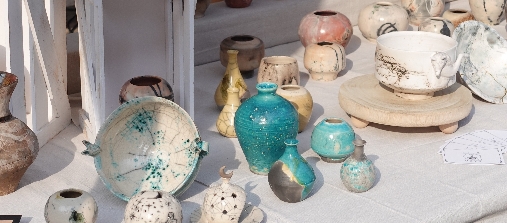

Our Firing Techniques
In this section, you can discover our firing techniques. Where earth, fire, air, and water meet, becoming ceramic objects.
Raku Firing
Raku is all about the shock of the moment. We pull the piece red-hot from the kiln at roughly 980°C and place it immediately into combustible material like sawdust or paper. The sudden change in temperature and the thick smoke create unique effects. The unglazed clay turns black from the carbon, while the glazes crackle or turn metallic depending on the oxygen reduction. It is a quick, intense process where we have to act fast and accept the unpredictable nature of fire.